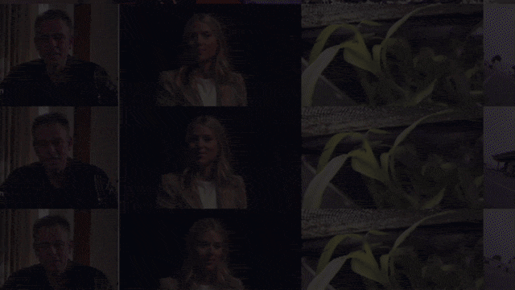

FakeParts: a New Family of AI-Generated DeepFakes
NeurIPS 2026
FakeParts are deepfakes with subtle, localized spatial or temporal manipulations of otherwise authentic videos. We present FakePartsBench over 81K videos (including 44K FakeParts) with pixel- and frame-level annotations and show they reduce human detection accuracy by up to 26% with similar degradation for sota detectors.